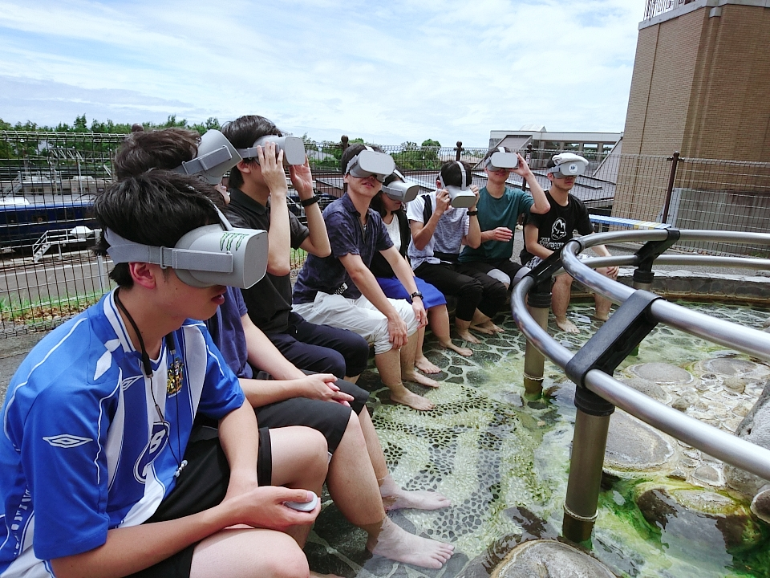
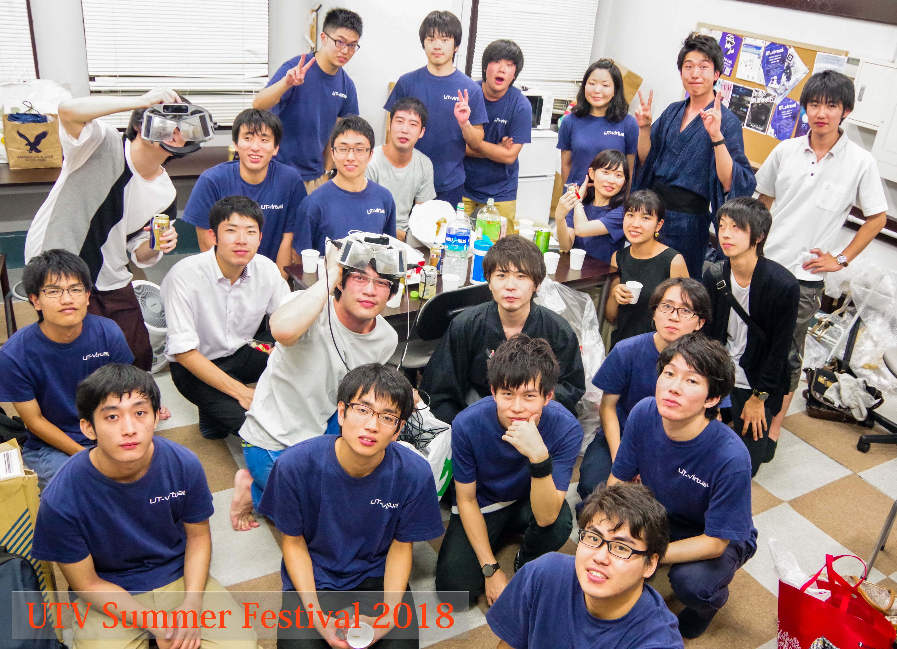
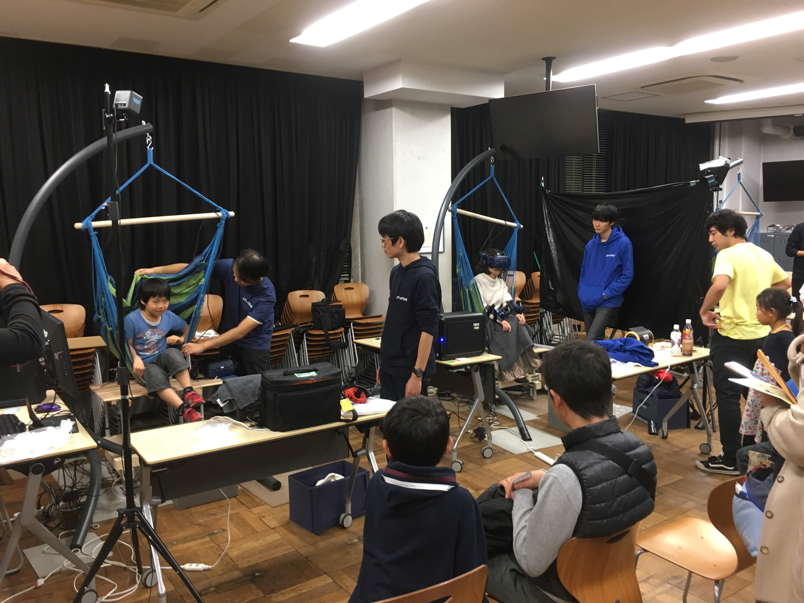
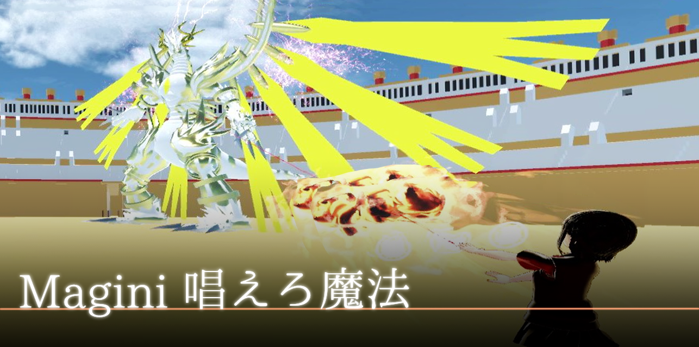
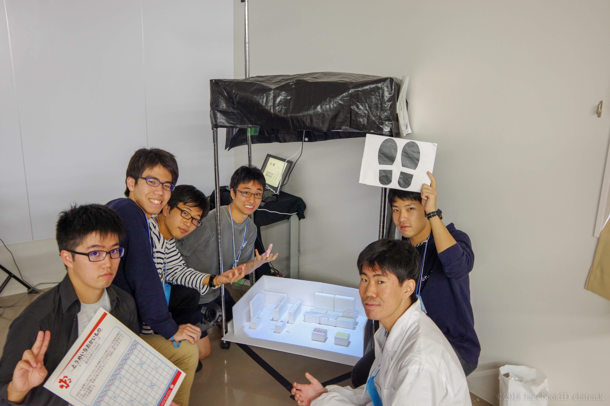
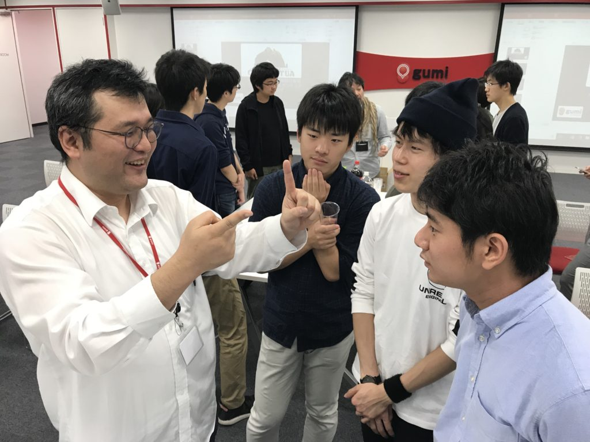
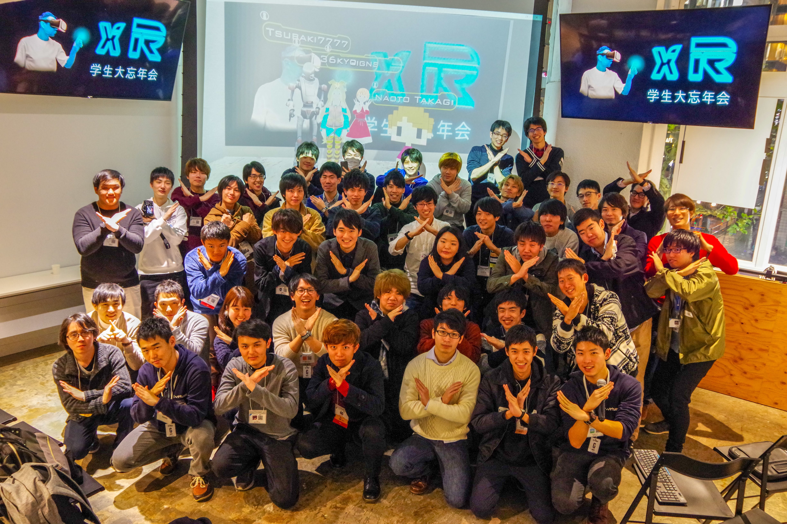

<!DOCTYPE html>
<html lang="ja">
 <head>
  <meta charset="utf-8">
   <title>2019新歓特設ページ</title>
   <meta name="viewport" content="width=device-width, initial-scale=1">
   <link rel="shortcut icon" type="image/UTVR_logoonly_800800.png" href="favicon.ico">
   <link rel="stylesheet" href="./normalize.css">
   <link rel="stylesheet" href="bootstrap/css/bootstrap.css">
   <link rel="stylesheet" href="./animate.min.css">
   <link rel="stylesheet" href="./WelcomeWeb2019.css">
   <!-- import google fonts -->
   <link href="https://fonts.googleapis.com/css?family=Lato:400,700|Noto+Sans+JP:400,500,700&amp;subset=japanese" rel="stylesheet">
   <script type="text/javascript" src="jQuery/jquery-3.3.1.js"></script>
   <script type="text/javascript" src="jQuery/snowfall.jquery.js"></script>
   <script type="text/javascript" src="bootstrap/js/bootstrap.js"></script>
  </head>
<body>


<nav class="navbar navbar-default navbar-fixed-top">
    <div class="container">
      <div class="navbar-header">
        <button type="button" class="navbar-toggle collapsed" data-toggle="collapse" data-target="#navbar" aria-expanded="false" aria-controls="navbar">
          <span class="sr-only">Toggle navigation</span>
          <span class="icon-bar"></span>
          <span class="icon-bar"></span>
          <span class="icon-bar"></span>
        </button>
        <a class="navbar-brand" href="#">UT-virtual新歓特設ページ2019</a>
      </div>
      <div id="navbar" class="collapse navbar-collapse">
        <ul class="nav navbar-nav">
          <li ><a href="#">TOP</a></li>
          <li><a href="#about">ABOUT US</a></li>
          <li><a href="#headGreeting">代表挨拶</a></li>
          <li><a href="#events">EVENTS</a></li>
          <li><a href="#yearofutv">UTVの一年</a></li>
          <li><a href="#works">作品紹介</a></li>
          <li><a href="#dailyActivity">普段の活動</a></li>
          <li><a href="#access">ACCESS</a></li>
          <li><a href="#question">お問い合わせ</a></li>
        </ul>
      </div><!--/.nav-collapse -->
      <!--
      
      
    -->
    </div>
  </nav>

  <!-- Snowfall-->
  <div id="sakura">
    <script type="text/javascript" class="sakuraScript">
    if(window.innerWidth > 768){
      $(document).snowfall({image :"./images/s_f_sakura_flower360.png", flakeCount:154, flakeIndex: -3, minSize: 10, maxSize:20, maxSpeed:3, minSpeed:0.5, shadow: false, round: true});
    }
    $(document).snowfall({image :"./images/s_f_sakura_flower360.png", flakeCount:154, flakeIndex: -3, minSize: 10, maxSize:20, maxSpeed:3, minSpeed:0.5, shadow: false, round: true});
    </script>

  <section id="about">
    <div class="container-fluid about">
      <div class="aboutBox">
      
      <div class="col-lg-8 col-lg-offset-2 aboutMain">
        <h1 class="animated fadeInDown">What's<br>
          UT-virtual ?</h1>
        <div class="col-lg-8　aboutParagraph animated fadeInDown">
          <p>最近耳にすることが増えてきた「VR」や「AR」といった言葉。<br>
            それらは単にヘッドマウントディスプレイやスマホアプリにとどまるものではなく、「人間の知覚や現実世界を拡張する技術」です。<br>
            UT-virtualは自分たちで体験を創造することで、それらの技術がより人々にとって身近になることを目指しています。<br>
            未だ広大なフロンティアが広がっているVRやAR。<br>
            私たちと一緒に、未来を創りませんか？</p>
        </div>
        <div class="row"></div>
          <div class="aboutButton animated fadeInDown">
            <a class="btn btn-primary" href="http://utvirtual.tech/about">Learn More</a>
          </div>
        </div>
        </div>
    </div>
  </section>

  <section id="headGreeting">
    <div class="container-fluid headGreeting">
      <div class="col-lg-8 col-lg-offset-2 headGreetingMain">
          <div class="row headGreetingTitle">
            <h1>代表挨拶</h1>
          </div>
        <div class="col-lg-12 headGreetingText">
          <p>　新入生の皆さん、入学おめでとうございます！<br><br>
            　私たちUT-virtualは、東大で唯一の、そして全国でも最大規模の学生VRインカレサークルです。VRやARといった「人間の知覚や現実世界を拡張」する新しいテクノロジーに触れ、自分たちで体験を創造することで、それらの技術がより人々にとって身近になることを目指しています。<br><br>
            　大学で新しいことにチャレンジしたい、ものづくりが好き、プログラミングやデザインの知識を習得したい...
            文理や学年を問わず、どんな学生でも大歓迎です。<br><br>
            　UT-virtualで色々な人と情報交換をしたり、ゲームをつくったり、遊びに行ったりする中で、「実際に手を動かしてものづくりをする楽しさ」や「自分の作品を誰かに体験してもらう嬉しさ」を感じられるはずです。<br><br>
            　是非私たちと一緒に未来を創造しましょう！<br><br>
            代表　松迫翔悟
          </p>
        </div>
      </div>
      <div class="col-lg-1">
      </div>
    </div>
  </section>

  <section id="events">
    <div class="container-fluid eventsMain">
      <div class="col-lg-8 col-lg-offset-2">
        <div class="eventsTitle">
          <h1>新歓イベント</h1>
        </div>
        <div class="col-lg-6 eventsCalender">
          <!-- ここにカレンダーを挿入する-->
          <iframe src="https://calendar.google.com/calendar/embed?src=vlo8eu82hjjmge83vu35q9kp2g%40group.calendar.google.com&ctz=Asia%2FTokyo" style="border: 0" width=100% height="400" frameborder="0" scrolling="no"></iframe>
        </div>
        <div class="col-lg-6 eventsList">
          <div class="eventsIndContainer">
            <h2>4/1,2</h2>
            <p class="eventsIndTitle">サークルオリエンテーション</p>
            <p class="eventsIndLocation">駒場第一キャンパス5号館534教室</p>

          </div>
          <div class="eventsIndContainer">
            <h2>4/12,18</h2>
            <p class="eventsIndTitle">定例会見学</p>
            <p class="eventsIndLocation">18:45 駒場第１キャンパス正門集合</p>

          </div>
          <div class="eventsIndContainer">
            <h2>4/5,8,10,16,22,24</h2>
            <p class="eventsIndTitle">部室見学</p>
            <p class="eventsIndLocation">18:45 駒場第１キャンパス正門集合</p>

          </div>
          <div class="eventsIndContainer">
            <h2>4/7,21</h2>
            <p class="eventsIndTitle">ゲームジャム</p>
            <p class="eventsIndLocation">12:45 駒場第１キャンパス正門集合</p>
          </div>
          <div class="eventsIndContainer">
            <h2>4/13</h2>
            <p class="eventsIndTitle">女子ゲームジャム</p>
            <p class="eventsIndLocation">9:45 駒場第１キャンパス正門集合</p>
          </div>

      </div>
      <div class="col-lg-1">
      </div>
    </div>
  </section>

  <section id="yearofutv">
    <div class="container-fluid yearofutvMain">
      <div class="col-lg-8 col-lg-offset-2">
      <div class="yearofutvTitle">
        <h1>UT-virtualの一年</h1>
      </div>
      <div class="yearofutvContent row">
        <div class="yearofutvContentText col-lg-6">
          <h2 style="display:inline">5月</h2>
          <h3 style="display:inline">五月祭</h3>
          <p>新入生は入学してすぐサークルの一員として全体制作に取り組み、上級生の指導の元でゲーム制作の基礎基本を身につけます。</p>
        </div>
        <div class="yearofutvContentImages col-lg-6">
          
        </div>
      </div>
      <div class="yearofutvContent row">
        <div class="yearofutvContentText col-lg-6">
          <h2 style="display:inline">8月</h2>
          <h3 style="display:inline">夏合宿</h3>
          <p>サークルメンバー全員で合宿を行います。部員同士の交流を深めるとともに、ツール勉強会やハッカソンを開催しサークル全体のスキルアップを目指します。</p>
        </div>
        <div class="yearofutvContentImages col-lg-6">
          
        </div>
      </div>
      <div class="yearofutvContent row">
        <div class="yearofutvContentText col-lg-6">
          <h2 style="display:inline">9月</h2>
          <h3 style="display:inline">夏フェス</h3>
          <p>外部向けにUT-virtualオンリーでの制作展を行います。<br>新入生にとっては半年分の努力の成果を示す初のタイミングになります。</p>
        </div>
        <div class="yearofutvContentImages col-lg-6">
          
        </div>
      </div>
      <div class="yearofutvContent row">
        <div class="yearofutvContentText col-lg-6">
          <h2 style="display:inline">11月</h2>
          <h3 style="display:inline">駒場祭</h3>
          <p>駒場祭でのサークル全体での作品展示に取り組みます。<br>昨年度は戦闘機・風船・ペガサスに乗るVR体験「FlyFlyFly」を制作しました。</p>
        </div>
        <div class="yearofutvContentImages col-lg-6">
          
        </div>
      </div>
      <div class="yearofutvContent row">
        <div class="yearofutvContentText col-lg-6">
          <h2 style="display:inline">3月</h2>
          <h3 style="display:inline">春祭り</h3>
          <p>夏フェスと同様、外部向けにUT-virtual単体での制作展を実施します。<br>サークルメンバーが一年間で培った技術の集大成を披露します。</p>
        </div>
        <div class="yearofutvContentImages col-lg-6">
          
        </div>
      </div>
      </div>
    </div>
  </section>

  <section id="works">
    <div class="container-fluid worksMain">
      <div class="col-lg-8 col-lg-offset-2">
      <div class="worksTitle">
        <h1>作品紹介</h1>
      </div>
      <div class="worksWork col-lg-12">
        <h3>サークル全体での作品例（2018駒場祭）</h3>
        <div class="worksWorkPicture col-lg-6">
          
        </div>
        <div class="worksWorkText col-lg-6">
          <h3>作品名</h3>
          <p>FlyFlyFly</p>
          <h3>作品説明</h3>
          <p>今回の駒場祭展示の目玉「FlyFlyFly」は、空を飛ぶ浮遊感・爽快感を体感してもらおうというコンセプトで制作しました。<br>
            戦闘機、風船、ペガサスという3種類の飛び方を、1つの椅子の上でシームレスに体験できます。<br>
            VRゴーグルから見えるきれいな景色に加え、風、振動、椅子の上下動など、<br>
            場面に合わせた触覚提示を行うことで、没入感を最大限に高める工夫も施しました。</p>
        </div>
      </div>
      <div class="worksWork col-lg-12">
        <h3>個人作品例</h3>
        <div class="worksWorkPicture col-lg-6">
          
        </div>
        <div class="worksWorkText col-lg-6">
          <h3>作者</h3>
          <p><a href="https://twitter.com/ZeniYuki0922?lang=ja">@ZeniYuki0922</a></p>
          <h3>作品名</h3>
          <p>Magini</p>
          <h3>作品説明</h3>
          <p>多彩な魔法を操ってモンスターを倒そう！Maginiは音声認識により、実際に詠唱することで魔法を使うことができるゲームです。</p>
        </div>
      </div>
      </div>
    </div>
  </section>

  <section id ="dailyActivity">
    <div class="container-fluid dailyActivityMain">
      <div class="col-lg-8 col-lg-offset-2">
        <div class="dailyActivityTitle">
        <h1>普段の活動</h1>
        </div>
        <div class="dailyActivityContent row">
          <div class="dailyActivityContentText col-lg-6">
            <h3>定例会</h3>
            <ul>
              <li>部員による勉強会</li>
              <li>VR関連企業の方の講演会</li>
              <li>自主ゼミ</li>
              <li>その他ハッカソン等</li>
            </ul>
          </div>
          <div class="dailyActivityContentImage col-lg-6">
            
          </div>
        </div>
        <div class="dailyActivityContent row">
          <div class="dailyActivityContentText col-lg-6">
            <h3>XR関連企業さま訪問・講演会</h3>
            <h4>今までいらっしゃった企業様（敬称略）</h4>
            <ul>
              <li>株式会社gumi</li>
              <li>クラスター株式会社</li>
              <li>プレティア株式会社</li>
              <li>株式会社MESON</li>
            </ul>
            <h4>訪問させていただいた企業様（敬称略）</h4>
            <ul>
              <li>株式会社よむネコ</li>
              <li>株式会社ソリッドレイ研究所</li>
              <li>株式会社ABAL</li>
            </ul>
          </div>
          <div class="dailyActivityContentImage col-lg-6">
            
          </div>
        </div>
        <div class="dailyActivityContent row">
          <div class="dailyActivityContentText col-lg-6">
            <h3>VR作品コンテストへの出場</h3>
            <ul>
              <li>IVRC</li>
              <li>VRクリエイティブアワード</li>
              <li>その他コンペティション等</li>
            </ul>
            <h3>学外イベントの開催</h3>
            <ul>
              <li>xR学生忘年会の主催</li>
              詳しくは<a href="http://utvirtual.tech/archives/2829?fbclid=IwAR3RQibJy-s_qlcjI8hJNXH7GW5jpf3Ip-3ht2JPAoMkcRNQwZyxOReuXoo">こちら</a>
            </ul>
          </div>
          <div class="dailyActivityContentImage col-lg-6">
            
          </div>
        </div>
      </div>
    </div>
  </section>


  <section id="access">
    <div class="container-fluid accessMain">
        <div class="accessTitleContainer">
          <div class="accessTitle">
            <h1>アクセス</h1>
          </div>
        </div>
    </div>
        <div class="accessMap">
          <!-- ここにgoogleMapを貼る -->
          <iframe src="https://www.google.com/maps/embed?pb=!1m18!1m12!1m3!1d3241.5867637630095!2d139.6748236656358!3d35.6625515801986!2m3!1f0!2f0!3f0!3m2!1i1024!2i768!4f13.1!3m3!1m2!1s0x6018f34442d1396d%3A0x2ba3071649b0734f!2z5p2x5Lqs5aSn5a2mIOWFiOerr-enkeWtpuaKgOihk-eglOeptuOCu-ODs-OCv-ODvA!5e0!3m2!1sja!2sjp!4v1551053185299" width=100% height="450" frameborder="0" style="border:0" allowfullscreen></iframe>
        </div>
        <!--
        <div class="accessAddress">
          <a href="https://www.google.co.jp/maps/place/東京大学+先端科学技術研究センター/@35.6623888,139.6766292,18z/data=!3m1!4b1!4m5!3m4!1s0x6018f34442d1396d:0x2ba3071649b0734f!8m2!3d35.6623876!4d139.6772363">
          <p>〒153-8904<br>
            東京都目黒区駒場４丁目６−１ 東京大学 先端科学技術研究センター14号館113号室</p>
          </a>
        </div>
      -->

  </section>

  <section id="question">
    <div class="container-fluid questionMain">
      <div class="col-lg-offset-2 col-lg-8 row">
        <div class="questionTitle">
          <h1>お問い合わせ</h1>
        </div>
        <ul>
          <li>email : contact@utvirtual.tech</li>
          <li>お問い合わせフォーム : <a href="http://utvirtual.tech/contact">http://utvirtual.tech/contact</a></li>
        </ul>
      </div>
    </div>
  </section>

  <footer>
    <div class="container-fluid footer">
      <p>Copyright © UT-virtual All Rights Reserved.</p>
    </div>
  </footer>

</div><!-- Snowfall Endtag -->

</body>
</html>
